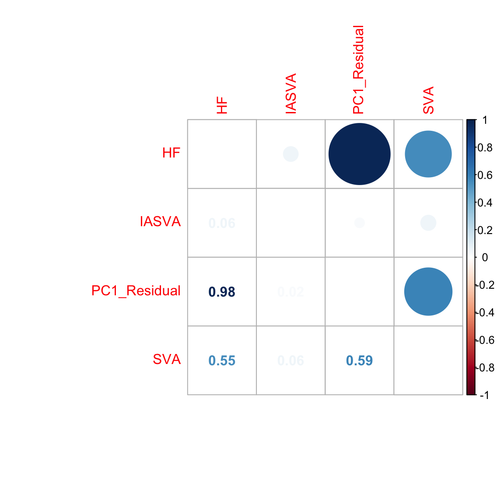
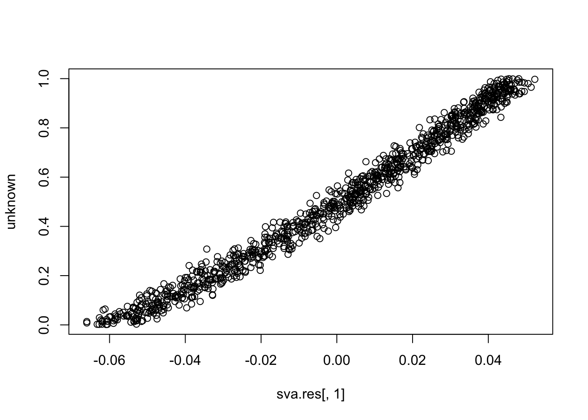
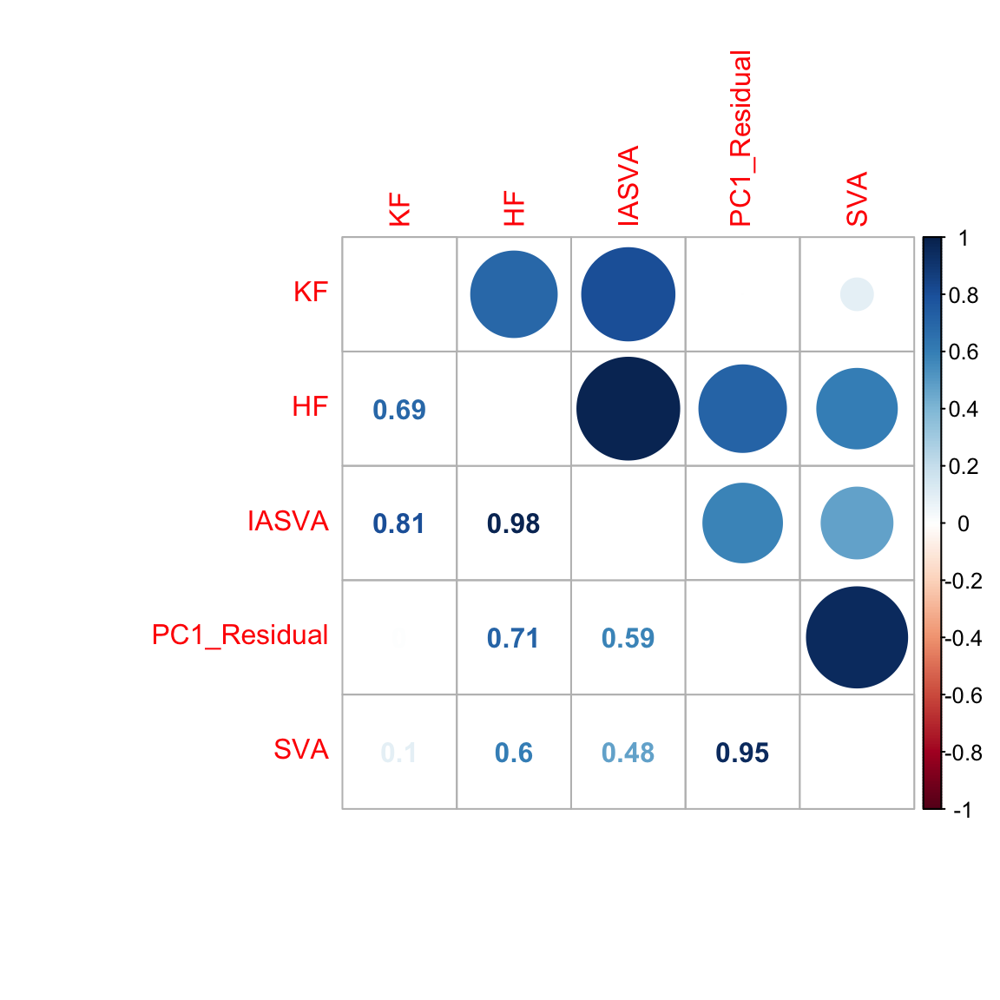

Last updated: 2018-08-27
workflowr checks: (Click a bullet for more information) ✔ R Markdown file: up-to-date
Great! Since the R Markdown file has been committed to the Git repository, you know the exact version of the code that produced these results.
✔ Environment: empty
Great job! The global environment was empty. Objects defined in the global environment can affect the analysis in your R Markdown file in unknown ways. For reproduciblity it’s best to always run the code in an empty environment.
✔ Seed:
set.seed(20180731)
The command set.seed(20180731) was run prior to running the code in the R Markdown file. Setting a seed ensures that any results that rely on randomness, e.g. subsampling or permutations, are reproducible.
✔ Session information: recorded
Great job! Recording the operating system, R version, and package versions is critical for reproducibility.
✔ Repository version: 492eafb
wflow_publish or wflow_git_commit). workflowr only checks the R Markdown file, but you know if there are other scripts or data files that it depends on. Below is the status of the Git repository when the results were generated:
Ignored files:
Ignored: .DS_Store
Ignored: .Rhistory
Ignored: .Rproj.user/
Ignored: data/.DS_Store
Ignored: docs/.DS_Store
Ignored: docs/figure/.DS_Store
Ignored: inst/.DS_Store
Ignored: inst/doc/.DS_Store
Ignored: output/.DS_Store
Ignored: vignettes/.DS_Store
| File | Version | Author | Date | Message |
|---|---|---|---|---|
| Rmd | 492eafb | dleelab | 2018-08-27 | figure number changed |
| Rmd | e042edf | dleelab | 2018-08-27 | figure updated |
| html | 5e29c04 | dleelab | 2018-08-22 | reviewer2 sim updated. |
| Rmd | 17ebb03 | dleelab | 2018-08-22 | text edit |
| Rmd | fa4ce46 | dleelab | 2018-08-21 | figure changed |
| Rmd | cf73dbb | dleelab | 2018-08-21 | reviewer2 sim updated |
| Rmd | c241b04 | dleelab | 2018-08-03 | added |
| html | c241b04 | dleelab | 2018-08-03 | added |
# Setting up the known and unknown factors.
set.seed(10000)
known <- runif(1000)
unknown <- runif(1000, 0, 0.1) # weak unknown factor
# Generating Poisson count data from log-normal means.
ngenes <- 5000
known.effect <- rnorm(ngenes, sd=2)
unknown.effect <- rnorm(ngenes, sd=2)
mat <- outer(known.effect, known) + outer(unknown.effect, unknown) + 2 # to get decent-sized counts
counts <- matrix(rpois(length(mat), lambda=2^mat), nrow=ngenes)
library(SummarizedExperiment)
se <- SummarizedExperiment(list(counts=counts))
# Running IA-SVA, version 0.99.3.
library(iasva)
design <- model.matrix(~known)
res <- iasva(se, design, num.sv=5, permute = FALSE)
# IA-SVA running...
#
# SV 1 Detected!
#
# SV 2 Detected!
#
# SV 3 Detected!
#
# SV 4 Detected!
#
# SV 5 Detected!
#
# # of significant surrogate variables: 5
cor(res$sv[,1], unknown) # these SVs are not the unknown factor (correlation ~= 0)
# [1] 0.05699341
cor(res$sv[,2], unknown)
# [1] -0.1317231
cor(res$sv[,3], unknown)
# [1] 0.06301151
cor(res$sv[,4], unknown)
# [1] -0.08444932
cor(res$sv[,5], unknown)
# [1] 0.1239618
cor(res$sv[,1], known) # ... but are instead the known factor (correlation ~= +/-1)
# [1] -0.9988192
cor(res$sv[,2], known)
# [1] 0.9971117
cor(res$sv[,3], known)
# [1] -0.9558875
cor(res$sv[,4], known)
# [1] 0.9982102
cor(res$sv[,5], known)
# [1] -0.9934994
## Compare to just naively taking the first PC of the residual matrix.
library(limma)
#
# Attaching package: 'limma'
# The following object is masked from 'package:BiocGenerics':
#
# plotMA
resid <- removeBatchEffect(log(assay(se)+1), covariates=known)
pr.out <- prcomp(t(resid), rank.=1)
abs(cor(pr.out$x[,1], unknown)) # close to 1
# [1] 0.9766822
abs(cor(pr.out$x[,1], known)) # close to zero.
# [1] 2.35573e-17
## Compare to SVA
library(sva)
mod1 <- model.matrix(~known)
mod0 <- cbind(mod1[,1])
sva.res = svaseq(counts,mod1,mod0, n.sv=5)$sv
# Number of significant surrogate variables is: 5
# Iteration (out of 5 ):1 2 3 4 5
abs(cor(sva.res[,1], unknown)) # 0.55
# [1] 0.5522043
abs(cor(sva.res[,1], known)) # close to zero.
# [1] 0.04603016
hf.mat1 <- cbind(known, unknown, res$sv[,1], pr.out$x[,1], sva.res[,1])
colnames(hf.mat1) <- c("KF","HF","IASVA","PC1_Residual","SVA")
corrplot.mixed(abs(cor(hf.mat1)), tl.pos="lt")
set.seed(10000)
known <- runif(1000)
unknown <- runif(1000)
ngenes <- 5000
known.effect <- rnorm(ngenes, sd=2)
unknown.effect <- rnorm(ngenes, sd=2)
mat <- outer(known.effect, known) + outer(unknown.effect, unknown) + 2 # to get decent-sized counts
counts <- matrix(rpois(length(mat), lambda=2^mat), nrow=ngenes)
library(SummarizedExperiment)
se <- SummarizedExperiment(list(counts=counts))
library(iasva)
design <- model.matrix(~known)
res <- iasva(se, design, num.sv=5, permute = FALSE)
# IA-SVA running...
#
# SV 1 Detected!
#
# SV 2 Detected!
#
# SV 3 Detected!
#
# SV 4 Detected!
#
# SV 5 Detected!
#
# # of significant surrogate variables: 5
cor(res$sv[,1], unknown) # first SV is the unknown factor.
# [1] -0.9960557
cor(res$sv[,2], unknown)
# [1] 0.7637275
cor(res$sv[,3], unknown)
# [1] 0.7564822
cor(res$sv[,4], unknown)
# [1] -0.7629373
cor(res$sv[,5], unknown)
# [1] 0.4760279
cor(res$sv[,1], known)
# [1] -0.004959888
cor(res$sv[,2], known) # but SVs 2-5 are correlated with the known factor...
# [1] -0.7014209
cor(res$sv[,3], known)
# [1] -0.7076734
cor(res$sv[,4], known)
# [1] -0.476617
cor(res$sv[,5], known)
# [1] -0.8898334
## Compare to just naively taking the first PC of the residual matrix.
library(limma)
resid <- removeBatchEffect(log(assay(se)+1), covariates=known)
pr.out <- prcomp(t(resid), rank.=1)
abs(cor(pr.out$x[,1], unknown)) # close to 1
# [1] 0.9963041
abs(cor(pr.out$x[,1], known)) # close to zero.
# [1] 1.691586e-16
# Compare to SVA
library(sva)
mod1 <- model.matrix(~known)
mod0 <- cbind(mod1[,1])
sva.res = svaseq(counts,mod1,mod0, n.sv=1)$sv
# Number of significant surrogate variables is: 1
# Iteration (out of 5 ):1 2 3 4 5
abs(cor(sva.res[,1], unknown)) # close to 1
# [1] 0.9900321
abs(cor(sva.res[,1], known)) # close to zero.
# [1] 0.0007644251
hf.mat2 <- cbind(known, unknown, res$sv[,1], pr.out$x[,1], sva.res[,1])
colnames(hf.mat2) <- c("KF","HF","IASVA","PC1_Residual","SVA")
corrplot.mixed(abs(cor(hf.mat2)), tl.pos="lt")
We noticed several issues in these simulations. First, SVA or factor analysis based methods including IA-SVA are designed to estimate hidden variables with distinct levels (i.e., factors) or a transformation of factors. However, instead of simulating factors (e.g., a variable with two levels (1 and -1)) as typically done in such analyses1,2 (e.g., see http://jtleek.com/svaseq/simulateData.html and Method section (Simulated data) of https://www.biorxiv.org/content/biorxiv/early/2017/10/27/200345.full.pdf), the reviewer simulated numeric vectors from a uniform distribution (e.g., runif(1000)) and used them as hidden variables. We note that this leads, like IA-SVA, SVA also to perform poorly in the simulation study (r = -0.55) (see https://dleelab.github.io/iasvaExamples/reviewer2_sim.html). Second, IA-SVA does not accept intercept column in the design matrix; therefore instead of design, design[,-1] should have been used in these simulations. Third, the reviewer simulated counts using a Poisson distribution (mean = variance); however, negative binomial or zero-inflated negative binomial is a more appropriate model to simulate high variability (mean << variance) in bulk or single cell RNA-seq data. Fourth, even though only one hidden factor is simulated in the study, IA-SVA was forced to generate five hidden factors by setting the option ‘num.sv’ = 5. This leads IA-SVA to generate SV2-SV5, which are highly correlated SV1. To avoid this, we recommend users using the permutation procedure (by setting the default setting for option ‘permute’ (i.e, permute = TRUE) in ‘iasva’ function) or ‘fast_iasva’ function to determine the number of meaningful hidden factors. Lastly, to simulate a hidden factor with stronger effect sizes, the standard deviation (sd) in “unknown.effect <- rnorm(ngenes, sd=2)” should be increased (e.g., sd=4); rather increasing the range of simulated factor values from “unknown <- runif(1000, 0, 0.1)” to “unknown <- runif(1000)”. We have repeated the simulation studies by taking into consideration these points below.
Here, we simulated the known and hidden factors to affect only 100 (5%) and 20 (1%) genes respectively. We simulated the 20 genes affected by the hidden factor to be also affected by the known factor. Similarly, the two factors are highly correlated (r=0.7).
# Setting up the known and unknown factors.
set.seed(10000)
# to reduce the computational burden, we reduced the sample size (# of cells) and # of genes.
sample.size <- 100
ngenes <- 2000
# CORRECTEION: Here, we simulate factors with two levels (-1 or 1).
factor.prop <- 0.5
flip.prob <- 0.8 # to simulate high correlation btw known and hidden factors
known <- c(rep(-1,each=sample.size*factor.prop),rep(1,each=sample.size-(sample.size*factor.prop)))
coinflip = rbinom(sample.size,size=1,prob=flip.prob)
unknown = known*coinflip + -known*(1-coinflip)
cor(known, unknown) # correlation between known and unknown factors = 0.7
# [1] 0.6940221
# Generating Poisson count data from log-normal means.
# CORRECTION: to make factor with stronger effect size, we use 2 as SD here.
known.effect <- rnorm(ngenes, sd=2)
unknown.effect <- rnorm(ngenes, sd=2)
# To make estimation of the hidden factor more challenging, here we select 1900 (95%) and 1980 (1%) genes from each effect size vector and set their effect sizes as 0. That is, 5% and 1% of genes are affected by the known and hidden factors, respectively. All 20 genes affected by the hidden factor are affected by the known factor.
known.effect[1:1900] <- 0
unknown.effect[1:1980] <- 0
mat <- outer(known.effect, known) + outer(unknown.effect, unknown) + 2 # to get decent-sized counts
counts <- matrix(rpois(length(mat), lambda=2^mat), nrow=ngenes)
se <- SummarizedExperiment(assays=counts)
# Running IA-SVA, version 0.99.3.
library(iasva)
design <- model.matrix(~known)
# CORRECTION: IASVA doesn't accept the constant term of design matrix, so we use design[,-1] instead of design
res <- iasva(se, as.matrix(design[,-1]), threads=8) # iasva detected only one hidden factor.
# IA-SVA running...
#
# SV 1 Detected!
#
# # of significant surrogate variables: 1
# fast_iasva used here.
res.fast <- fast_iasva(se, as.matrix(design[,-1]), pct.cutoff = 2) # fast_iasva detected only one hidden factor.
# fast IA-SVA running...
#
# SV 1 Detected!
#
# # of obtained surrogate variables: 1
#plot(res$sv[,1], unknown)
abs(cor(res$sv[,1], unknown)) ## absolute value of cor(SV1, unknown factor) = 0.9995
# [1] 0.9831191
abs(cor(res$sv[,1], known)) ## absolute value of cor(SV1, known factor) close to 0.7.
# [1] 0.8073574
#plot(res.fast$sv[,1], unknown)
abs(cor(res.fast$sv[,1], unknown)) ## absolute value of cor(SV1, unknown factor) = 0.9995
# [1] 0.9831191
abs(cor(res.fast$sv[,1], known)) ## absolute value of cor(SV1, known factor) close to 0.7.
# [1] 0.8073574
# Compare to just naively taking the first PC of the residual matrix.
library(limma)
resid <- removeBatchEffect(log(assay(se)+1), covariates=known)
pr.out <- prcomp(t(resid), rank.=1)
#plot(pr.out$x[,1], unknown)
abs(cor(pr.out$x[,1], unknown)) # cor = 0.7
# [1] 0.7114086
abs(cor(pr.out$x[,1], known)) # close to zero.
# [1] 3.193674e-16
# Compare to SVA
library(sva)
mod1 <- model.matrix(~known)
mod0 <- cbind(mod1[,1])
sva.res = svaseq(counts,mod1,mod0)$sv
# Number of significant surrogate variables is: 1
# Iteration (out of 5 ):1 2 3 4 5
#plot(sva.res[,1], unknown)
abs(cor(sva.res[,1], unknown)) # cor = 0.7
# [1] 0.6006951
abs(cor(sva.res[,1], known)) # close to zero.
# [1] 0.09633978
hf.mat5 <- cbind(known, unknown, res$sv[,1], pr.out$x[,1], sva.res[,1])
colnames(hf.mat5) <- c("KF","HF","IASVA","PC1_Residual","SVA")
corrplot.mixed(abs(cor(hf.mat5)), tl.pos="lt")
| Version | Author | Date |
|---|---|---|
| 5e29c04 | dleelab | 2018-08-22 |
#par(oma = c(0, 2, 2, 2))
pdf("output/FigureL2.pdf", width=6,height=9)
par(mfrow=c(3,2))
corrplot.mixed(abs(cor(hf.mat1)), tl.pos="lt")
corrplot.mixed(abs(cor(hf.mat2)), tl.pos="lt")
corrplot.mixed(abs(cor(hf.mat3)), tl.pos="lt")
corrplot.mixed(abs(cor(hf.mat4)), tl.pos="lt")
corrplot.mixed(abs(cor(hf.mat5)), tl.pos="lt")
dev.off()
# quartz_off_screen
# 2sessionInfo()
# R version 3.5.0 (2018-04-23)
# Platform: x86_64-apple-darwin15.6.0 (64-bit)
# Running under: macOS Sierra 10.12.6
#
# Matrix products: default
# BLAS: /Library/Frameworks/R.framework/Versions/3.5/Resources/lib/libRblas.0.dylib
# LAPACK: /Library/Frameworks/R.framework/Versions/3.5/Resources/lib/libRlapack.dylib
#
# locale:
# [1] en_US.UTF-8/en_US.UTF-8/en_US.UTF-8/C/en_US.UTF-8/en_US.UTF-8
#
# attached base packages:
# [1] parallel stats4 stats graphics grDevices utils datasets
# [8] methods base
#
# other attached packages:
# [1] limma_3.36.2 corrplot_0.84
# [3] SummarizedExperiment_1.10.1 DelayedArray_0.6.1
# [5] matrixStats_0.53.1 Biobase_2.40.0
# [7] GenomicRanges_1.32.3 GenomeInfoDb_1.16.0
# [9] IRanges_2.14.10 S4Vectors_0.18.3
# [11] BiocGenerics_0.26.0 sva_3.28.0
# [13] BiocParallel_1.14.2 genefilter_1.62.0
# [15] mgcv_1.8-23 nlme_3.1-137
# [17] iasva_0.99.3 workflowr_1.0.1
# [19] rmarkdown_1.9
#
# loaded via a namespace (and not attached):
# [1] splines_3.5.0 lattice_0.20-35 htmltools_0.3.6
# [4] yaml_2.1.19 blob_1.1.1 XML_3.98-1.11
# [7] survival_2.42-3 R.oo_1.22.0 DBI_1.0.0
# [10] R.utils_2.6.0 bit64_0.9-7 GenomeInfoDbData_1.1.0
# [13] stringr_1.3.1 zlibbioc_1.26.0 R.methodsS3_1.7.1
# [16] evaluate_0.10.1 memoise_1.1.0 knitr_1.20
# [19] irlba_2.3.2 AnnotationDbi_1.42.1 Rcpp_0.12.17
# [22] xtable_1.8-2 backports_1.1.2 annotate_1.58.0
# [25] XVector_0.20.0 bit_1.1-14 digest_0.6.15
# [28] stringi_1.2.2 grid_3.5.0 rprojroot_1.3-2
# [31] tools_3.5.0 bitops_1.0-6 magrittr_1.5
# [34] RCurl_1.95-4.10 RSQLite_2.1.1 cluster_2.0.7-1
# [37] whisker_0.3-2 Matrix_1.2-14 git2r_0.21.0
# [40] compiler_3.5.0This reproducible R Markdown analysis was created with workflowr 1.0.1